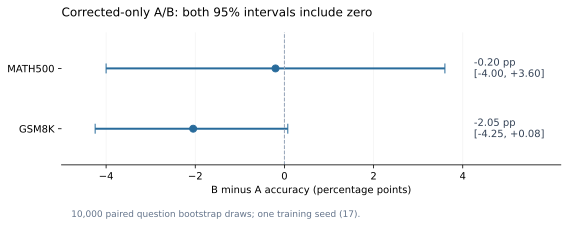

只纠错 A/B：训练、评测与独立核验已完成
更新 2026-10-22 07:49:40 PT · 已完成：A/B 训练 → 统一评测 → 三套独立 CPU 审计 → 真实回答核对
这轮已经跑完并逐条核验。B 没有展示出超过 A 的收益：MATH500 几乎相同，GSM8K 点估计更低。进一步检查找到了答案框与正文脱节、真实 PRM 漏判，以及全同结果组的归一化效应，三者不能混成一个“实现 bug”。
正式结果
| 评测集 | A：结果奖励 | B：结果 + 固定7B PRM | B − A | 95%配对区间 |
|---|---|---|---|---|
| MATH500 | 270/500 · 54.00% | 269/500 · 53.80% | -0.20 pp | [-4.00, +3.60] |
| GSM8K | 884/1319 · 67.02% | 857/1319 · 64.97% | -2.05 pp | [-4.25, +0.08] |
pp = 百分点。两个区间都包含0：未建立 B 的优势，也未建立 A/B 等效。10,000次同题 bootstrap；只有1个训练seed，区间不覆盖训练随机性。

实现核验：已通过，但边界清楚
共同初始化与前1,120题组顺序相同；A 6,022,435 token / 284更新，B 6,008,457 token / 280更新，均在首个完整更新达到6M时停止。不同更新数符合生成token预算口径。旧代码和旧结果保留。
通过的是冻结实现与账本的一致性检查。PRM是否判断正确、验答器能否覆盖所有数学等价答案，仍须看真实案例；没有宣称“所有数学层面的实现问题已排除”。
发现一：模型算到了正确答案，却没更新答案框
GSM8K里 A对B错120题、B对A错93题。对其中完整可解析的错答，分别有44条与7条满足“最后答案框很早出现，后面仍继续推导”。我们检查了这51条的完整正文，而不是只搜索正确数字。
| 这一事后筛选子集 | 后文接受正确数值、旧框未更新 | 正文仍错 | 矛盾未解 |
|---|---|---|---|
| A对B错中的44条 | 31 | 8 | 5 |
| B对A错中的7条 | 6 | 0 | 1 |
真实例子 · GSM8K / 893 · B
题目：时薪10美元增加2美元，每天8小时、每周5天。开头答案框是 400，后文正确计算 12 × 40 = 480，并写出“Mark makes $480 per week”。但没更新答案框，固定验答器仍判错。
固定验答器按最后一个答案框取值，在这里遵守了协议。把正文新数字拿来替换答案，会改动评分规则，所以正式准确率没有重算成“修正版”。两组都存在这种行为，不能把它一概归因为 PRM。
结构阈值从前10%改到25%或50%时，这里的44/7计数不变。语义分类仍是助手定性审查，非独立人工标注；31条中有1条仅以正确模拟代码输出结束，未写完整结论句。这个类别不代表全过程正确或只有格式错误；其余未解决的错误/矛盾未被并入此类。这些计数不能推广成总体错误率或因果贡献。
发现二：PRM有真漏判，但“高分错误”不一定被强化
从B训练记录中取最低步骤分最高的10条 outcome=0 回答：4条有真实数学错误，4条是答案框、单位或回答对象不符，2条是合法多解/等价表示未被固定验答器接受。仅1条的实际 advantage 为正。
真实漏判 · 训练行937
4 × 6 + 8 × 3 − 28 / 2 = 34，模型伪造执行结果 36，错误步骤仍得 PRM 0.999718。但整条回答实际 advantage 是 −1.072，它并没有因高PRM分而获得正advantage。
因此，“答错但PRM高”必须继续看推导、答案协议与组内实际优势，不能直接当成数学漏判或有害强化。这里的10条是挑选异常用的，不用于估计总体误判率。
发现三：绝对低分也能变成较大的正 advantage
| B训练组类型 | 组数 | 占比 | 平均 |advantage| |
|---|---|---|---|
| 混合结果 | 878 | 78.39% | 0.811 |
| 全对 | 30 | 2.68% | 0.797 |
| 全错 | 212 | 18.93% | 0.723 |
全对与全错合计21.61%的组，贡献19.92%的实际advantage绝对值总和。它们的结果奖励没有组内差异，组内奖励产生的advantage由过程分及其评分资格决定；0.2不能保证归一化后的影响很小。
真实例子 · 全错组1060
8条回答的PRM最低步骤分只有0.017–0.054，最高的那条仍得到 +1.070 advantage。这条回答有无效图索引、虚构运行结果和前后答案不一致；独立有限枚举核实答案为54。
这是原算法的相对比较机制，不能在baseline里当bug悄悄改掉。正advantage的错答也可能包含有用进展；这个反例只证实风险，不能单独证明它导致测试分数下降。19.92%是advantage绝对值之和占比，不是梯度贡献占比。
其余检查与成本
| 评测集 | 组 | 答对 | 完整但框内答错 | 无法解析 | 截断 | 平均生成token |
|---|---|---|---|---|---|---|
| MATH500 | A | 270 | 166 | 19 | 45 | 729.4 |
| MATH500 | B | 269 | 171 | 12 | 48 | 750.6 |
| GSM8K | A | 884 | 314 | 89 | 32 | 388.0 |
| GSM8K | B | 857 | 368 | 53 | 41 | 402.3 |
GSM8K里B的无法解析输出减少（89→53），但完整错答和截断增加。配对净少27题，对应完整错答−39、解析问题+23、截断−11。这是输出类别分解，不能直接称为数学能力分解。
训练期平均文本分段数 A11.917、B11.899；未见整体少分段塌缩。分箱PRM均分没有清晰单调上升，不能宣称已证明奖励投机。
B额外使用5,281,779 PRM输入token（padding后7,724,200），评分耗时593.35秒，包含分词、搬运和提取等。相同actor生成预算不等于相同总算力；当前顺序单次运行的墙钟差异不构成速度优势结论。
下一步：先验证输出一致性，不再盲换PRM
保留这轮正式A/B结果，先不跑完整C/D。最小后续是复用这两个checkpoint，在固定独立验证集上做2×2推理对照：A/B × 原提示/统一的“先推导、末尾一个最终答案框”提示。两边采用相同greedy配置，分别报告准确率、答案框与正文一致性及截断。
它只验证一个具体疑点：减少答案与正文脱节后，B相对A的差距是否仍在。它不能证明训练期PRM的因果效应；也不保证提示词能修好。先固定验证集与预算，且不拿本次测试题调提示。若差距仍在，再针对真实PRM漏判推进适配。
原C/D的失败监督也要承认：outcome=0里混有数学正确但答案框错误、合法等价答案被拒的样本，不能把它们自动当成所有步骤都错。
此项需要额外模型生成，超出本次CPU离线检查范围，尚未启动。没有新模型、C/D、额外seed或新训练。提示/验答变化须独立版本，不能替换本轮baseline。